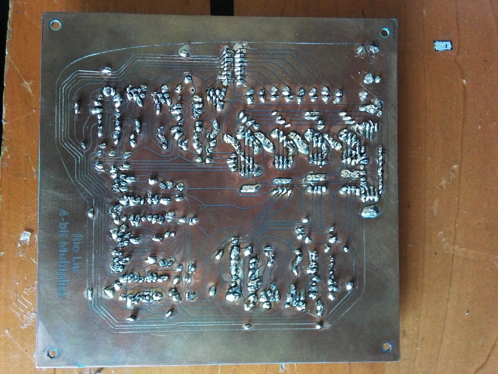
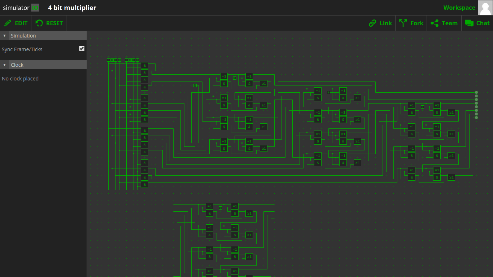
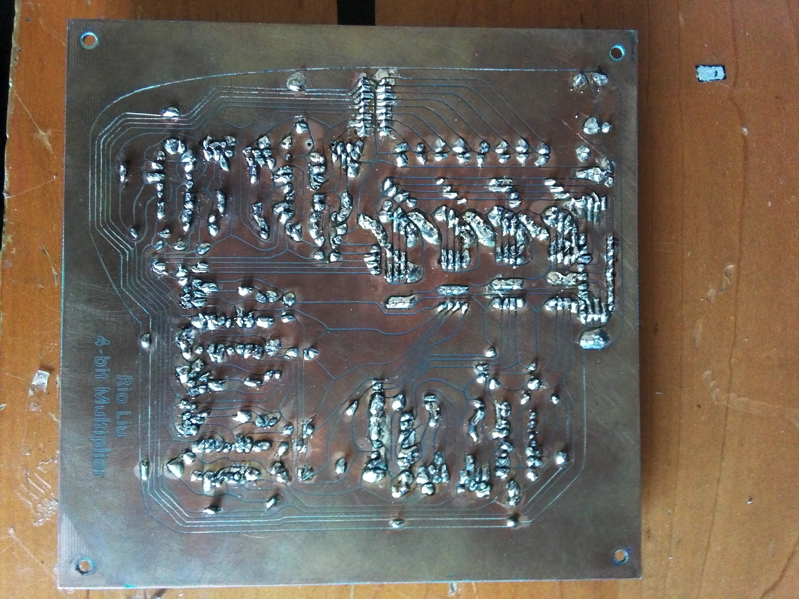
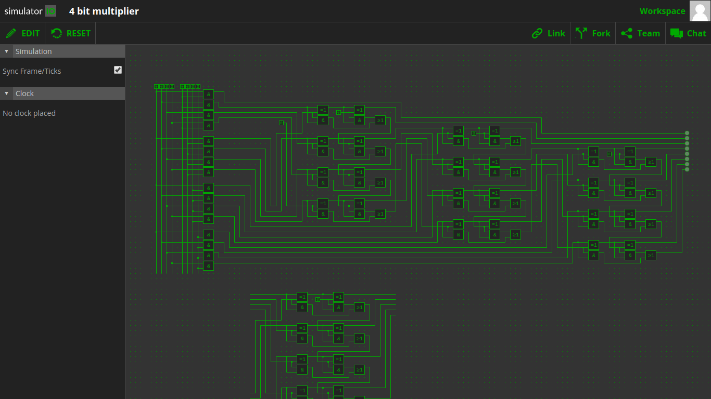

4 bit Binary Multiplier
2020-03-09
A while ago, when I was learning how to build circuit boards, I wanted to play with logic gates. So I made a 4 bit binary multiplier using only logic gates. It’s also a good project to learn how computers work at the lowest level. The AND gates were made with diodes; OR gates were made with NPN transistors; XOR gates were a bit more complicated, so I used the IC CD4070 to save space. Since I need to drill lots of hole on the board, might as well to use the CNC machine to drill them and carve the paths. After a few tries, I finished it by first put spray paint on the serface of the board, then let the machine to scribe out the circuits and drill holes, then finally, use chemicals to etch away the exposed copper.
Video:
 


